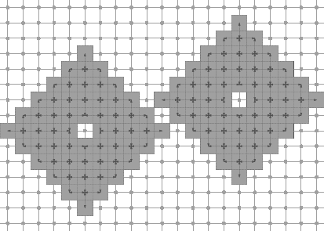
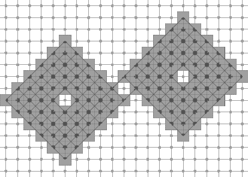

This part of the manual describes how to export DGtal objects into graphics files (and later buffers). For now, it is limited to 2D DGtal objects like CDomain, Object, CDigitalSet, Point, ImageContainer. The current supported export formats are SVG, EPS, XFIG and TikZ. It is currently based on LibBoard, but may evolve later (it will probably move to Cairo). This document is dedicated both to DGtal users and developers.
User guide to Board2D
Elementary usage: displaying a domain and a few points
To use the Board2D stream, you must include the header
The class Board2D is designed so as to make easy the visualization of digital objects, also it is for now limited to 2D discrete geometry. For the user, it is very simple to visualize digital sets, objects and others. To do so, the user has just to instantiate a Board2D object. This object is then an output stream, and if you wish to visualize some object, you use the stream operator << to output the object on the board. When you are finished, there is a command to export your graphics in SVG, XFIG, EPS or TikZ format.
The following code snippet defines three points and a rectangular domain in Z2. It then displays them in a Board2D object. The two last commands export the graphics in SVG and EPS format. The full code is in dgtalBoard2D-1-points.cpp.
This program outputs this image.
It is clear that the order in which you display elements has an influence on the exported graphics.
Displaying sets and digital objects
Displaying a digital set uses also the stream mechanism. You just have to use the flux operator << with a DigitalSet in parameter.
Mode selection: the example of digital objects
Some digital elements (like Object, PointVector, ArithmeticalDSSComputer) may have several possible ways to be rendered as a graphical object. For instance, a pixel may be seen more as a point or more as a unit square in the plane. In the same idea, a digital object may or may not be represented with its adjacency relations. Otherwise said, one may wish to see the set, another may wish to see the graph.
You may choose a mode for a drawable element by outputing on the stream a SetMode object. You just have to specify the classname (the easiest way is to call the method className() on an instance of the correct type) and the desired mode (a string). An Object is sensitive to the mode "" (default, just the set is displayed) and to the mode "DrawAdjacencies" (the graph is drawn). The following code snippet uses the digital set shape_set defined above.
Note the different adjacency relations depending on the topology chosen for the object. The full code is in dgtalBoard2D-2-sets.cpp.

(4,8)-object |

(8,4)-object |
Useful modes for several drawable elements
Here is a list of modes for several digital drawable elements ("" is always default mode).
- class PointVector, modes: "" / "Both", "Paving", "Grid"
- class Object, modes: "", "DrawAdjacencies"
- class HyperRectDomain, modes: "" / "Grid", "Paving"
- class ArithmeticalDSS, modes: "" / "BoundingBox", "Points"
- class FreemanChain, modes: "" / "Grid", "InterGrid"
- class GridCurve, modes: "" / "Fill"
- class LatticePolytope2D, modes: "" / "Transparent", "Filled"
- class AlphaThickSegmentComputer, modes ""/ "BoundingBox"
For instance, to change the drawing mode for the next object dss of type ArithmeticalDSS, you may use the line
If you wish to display both the points of a DSS and its bounding box, you must draw it twice, as follows:
Changing the style for displaying drawable elements.
All drawable elements have a default style for default. You may nevertheless modify it whenever you want for any object. The simplest way is to use instances of the following classes:
- CustomColors: to change pen color and fill color.
- CustomPenColor: to change only pen color.
- CustomFillColor: to change only fill color.
- CustomPen: to change pen color and fill color, but also optionnaly in this order the line width, the line style, the line cap, the line join.
An instance of one of this class is then attached to the drawable element by creating an instance of CustomStyle. Do not worry about deallocating the CustomXXX instances. This is done automatically. The following snippet indicates how to use these classes.
This program (see full source at dgtalBoard2D-3-custom-classes.cpp) outputs the following graphics.

Combining several CustomStyles, the main DGtal logo can be generated as follows.:
Creating your own custom style class for displaying drawable elements.
Another way to change the style is to create yourself a minimal structure to hold the style. The following example shows how to change the pen and fill color on-the-fly. First of all, the custom style class:
The custom style is then attached to drawable element by creating an instance of CustomStyle. Do not worry about deallocating the MyDrawStyleCustomColor instances. This is done automatically.
This program (see full source at dgtalBoard2D-3-custom-points.cpp) outputs the following graphics.
Using colormaps in Board2D streams
You can use colormaps in conjunction with custom styles for Board2D. Several classes represent colormaps: CColorMap, ColorBrightnessColorMap, GradientColorMap, GrayscaleColorMap, HueShadeColorMap, SimpleDistanceColorMap (see Image and digital object import/export). You can use any of them to produce colors. Here, we define a simple colormap going from blue to red then yellow. Then, each pixel of the digital set shape_set (see above) is displayed with a fill color that depends on its distance to the point c1.
An interesting point of the exemple below is how we specify a custom style for a specific mode of some drawable element (here a Point). We just add "/"+ModeName to the name of the style.
This program (see full source at dgtalBoard2D-4-colormaps.cpp) outputs the following graphics.
More precisely, several styles may be applied before some drawable element is displayed. They are called in this order.
- the default style (always applied)
- the user-specified style for default mode (when defined)
- the default style for the current mode (applied only if mode is not default, i.e. different from "")
- the user-specified style for the current mode (applied only if mode is not default, i.e. different from "", and defined)
Therefore, if you change the drawing mode of a drawable element and if you wish to have a specific behavior, you must attach the custom style to the mode style of your object. For instance, if your object is p and the mode is "Special", there is some line:
Another example involving ArithmeticalDSS is greedy-dss-decomposition.cpp. It outputs the following graphics:
Compiling TikZ files
Quoted from http://sourceforge.net/projects/pgf/: PGF is a TeX macro package for generating graphics. It is platform- and format-independent and works together with the most important TeX backend drivers, including pdftex and dvips. It comes with a user-friedly syntax layer called TikZ.
TikZ allows to create inline graphics in LaTeX documents. TikZ files produced by Board2D contains pgf/TikZ commands in a tikzpicture environment and are intended to be compiled by a LaTeX engine. Please refer to the pgf/TikZ manual and project forums for further information (pgf project homepage).
Inclusion in a LaTeX document
The main LaTeX documents should be set up to use package "tikz" and TikZ library "arrows" with the following lines in preamble:
The figure can be included in a floating environment as follows:
The TikZ file can be included at compilation time using the LaTeX macro \input.
Standalone compilation
Alternatively, a PDF graphics file can be generated from the standalone TikZ file using a pdflatex command as shown in the following Makefile:
Conclusion and future improvements
The Board2D mechanism is a simple mechanism for displaying 2D digital objects and graphics. A 3D adaptation is under development. Furthermore, in order to enhance its graphics and export possibilities, the hidden drawing library will certainly move to Cairo.
Developer guide to Board2D
This section aims at helping the developer to understand the background of the DGtalStream mechanism, and then to create its own drawable elements.
Overview of the Board2D principle
Following the concept paradigm adopted in DGtal, the Board2D object may only displayed instances of classes that realize the concept CDrawableWithBoard2D. For short, a drawable element D must:
- have a method defining his name: std::string myD.className()
- be associated to at least two global functions draw and defaultStyle (Note that there's an exception: for a class with inner classes, this 2 functions are member functions, see for example GridCurve.h and its inner classes...)
Global defaultStyle functions are specified in Style2DFactory.h and Style2DFactory.ih.
The defaultStyle function must return a pointer to a DrawableWithBoard2D object. For instance, here is below an example of the defaultStyle function (and its DefaultDrawStylePaving structure associated) for a PointVector.
Here, the DrawableWithBoard2D is just an interface that specifies a virtual method setStyle for the style.
The dynamically allocated instance of the default style for the drawable element may eventually be tuned for a specific mode given as a string.
"Pure" (not in the DGtal namespace) global draw functions are specified in the Display2DFactory.h and Display2DFactory.ih.
The draw function contains the drawing commands. For instance, here is below a drawing example for a PointVector object drawn as an arrow.
This method draws the drawable element on the given Board2D instance. The style has been applied automatically before.
The Board2D class operates as an output stream for drawable elements. It inherits from LibBoard::Board. This base class holds the drawing capabilities for several export formats. You must look at this class to see the drawing possibilities.
An important method of Board2D is the templated Board2D::operator<<. This method takes any drawable element (satisfying CDrawableWithBoard2D) and takes care of setting the correct style and calling the drawing method of the object.
The Board2D remembers what is the current style for a given drawable element type. Furthermore, it can remember its current mode. Last, it remembers also the specific style associated for this mode. Generally, as a developer, you do not have to take care at how user chooses their new style or new mode. You will only prepare in your class if you wish to have modes, and how you draw the object depending on the current mode.
Short overview of the LibBoard library
LibBoard is a C++ library for simple Postscript, SVG, and XFig drawings.
(Copyleft, LGPL) 2007 Sébastien Fourey - GREYC ENSICAEN
It allows simple drawings in:
- Encapsulated Postcript files (EPS) ;
- XFig files (FIG) ;
- Scalable Vector Graphics files (SVG).
The main class of the library is the LibBoard::Board class. It is intended to be as simple as possible so that it can be used quickly in programs to generate the kind of figure one would rather not draw by hand, but which can be easily drawn by a computer (C++) program.
A clone of the LibBoard source code (release: 0.8.8-3) has been included in DGtal. Its classes are grouped into the namespace Board.